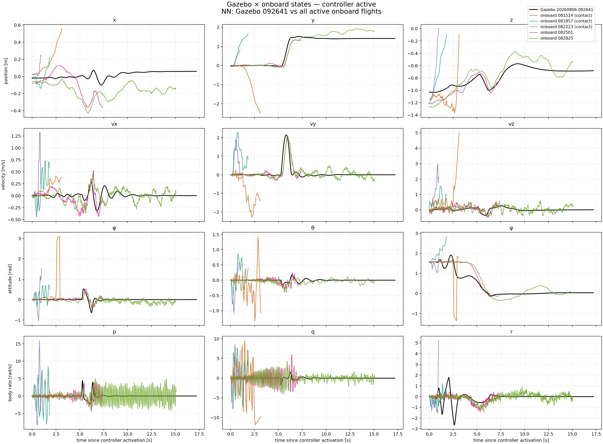
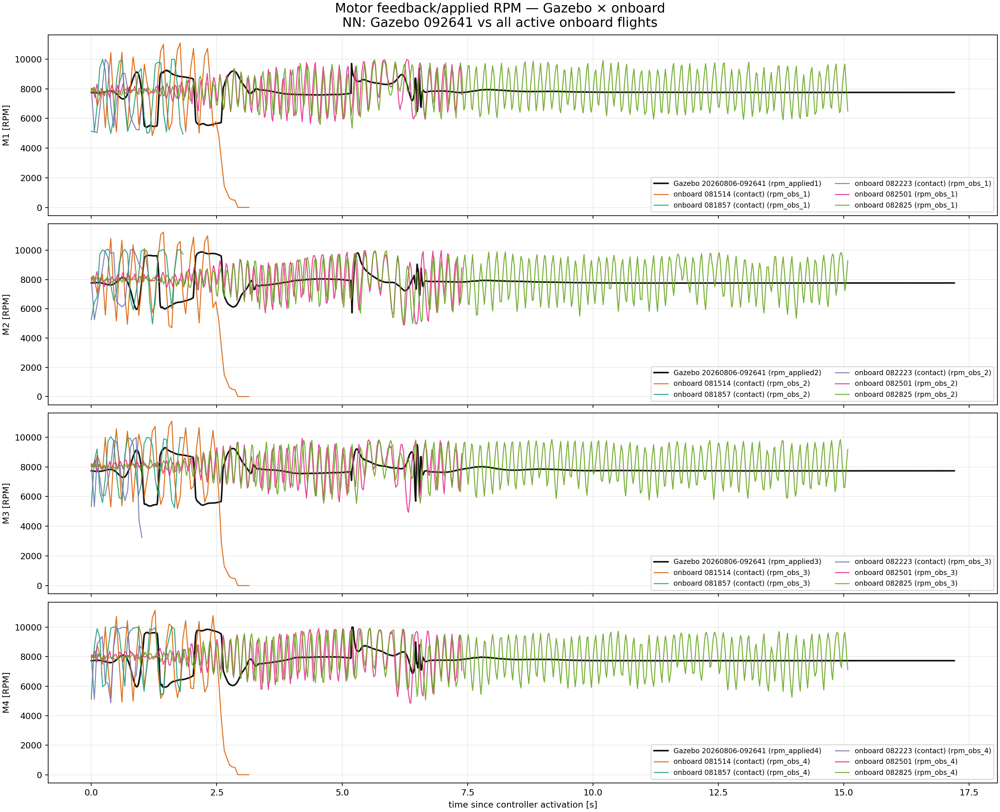
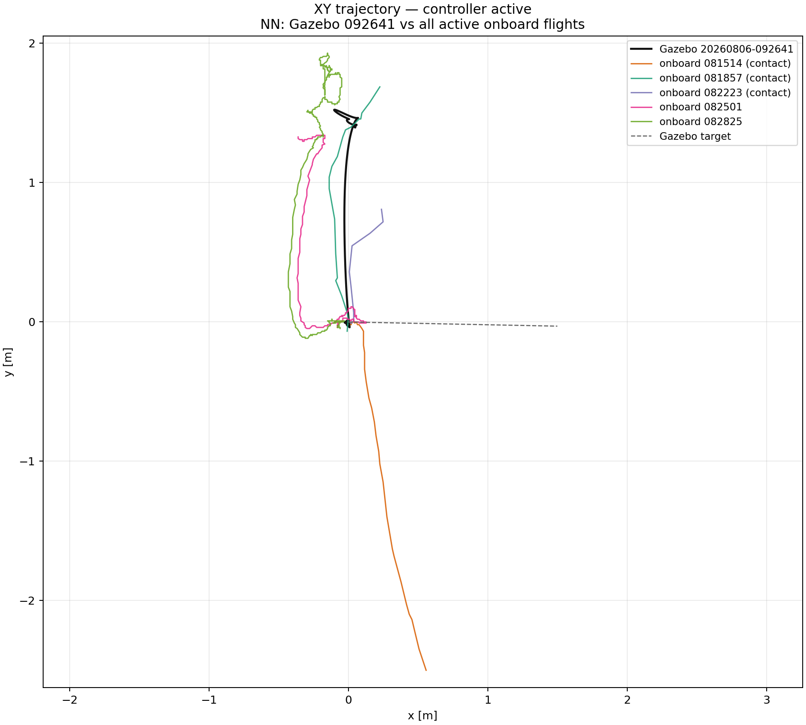
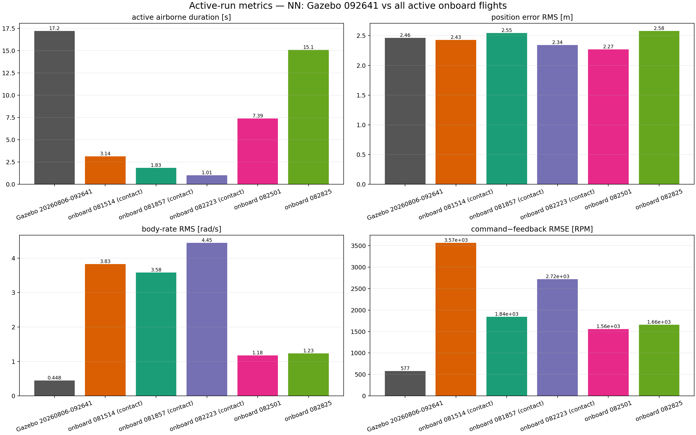

All curves are aligned at controller activation and stop at the end of the usable active/airborne window.
| run | controller | duration [s] | position RMS [m] | rate RMS [rad/s] | RPM tracking RMSE |
|---|---|---|---|---|---|
| Gazebo 20260806-092641 | NN | 17.21 | 2.463 | 0.4479 | 576.9 |
| onboard 081514 (contact) | NN | 3.141 | 2.43 | 3.825 | 3569 |
| onboard 081857 (contact) | NN | 1.827 | 2.545 | 3.582 | 1845 |
| onboard 082223 (contact) | NN | 1.008 | 2.345 | 4.448 | 2720 |
| onboard 082501 | NN | 7.387 | 2.268 | 1.177 | 1556 |
| onboard 082825 | NN | 15.08 | 2.578 | 1.231 | 1657 |



